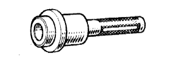
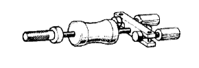
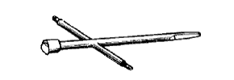

リヤアクスルASSY（4WD） 準備品 【取り付け】
| 09515-21010 | リヤアクスルシャフトベアリング リプレーサー | |
|  | 09517-12010 | リヤアクスルシャフトオイルシール リプレーサー |
|  | 09520-00031 | リヤアクスルシャフトプラー |
 | 09608-32010 | ステアリングナックルオイルシール リプレーサー |
|  | 09703-30010 | ブレ-キシュ-リタ-ンスプリング ツ-ル |
 | 2046-08 | ダイヤルゲージ(10mm) (株)バンザイ扱い |
| TM-110 | ダイヤルゲージ(10mm) (株)イヤサカ扱い |
 | QL-100N | QLトルクレンチ（100N) (株)バンザイ·(株)イヤサカ扱い |
| QL-200N | QLトルクレンチ（200N) (株)バンザイ·(株)イヤサカ扱い |
| トヨタ純正 ＭＰグリースNo.２ | ||
| 白ガソリン | ||
| 手袋 |